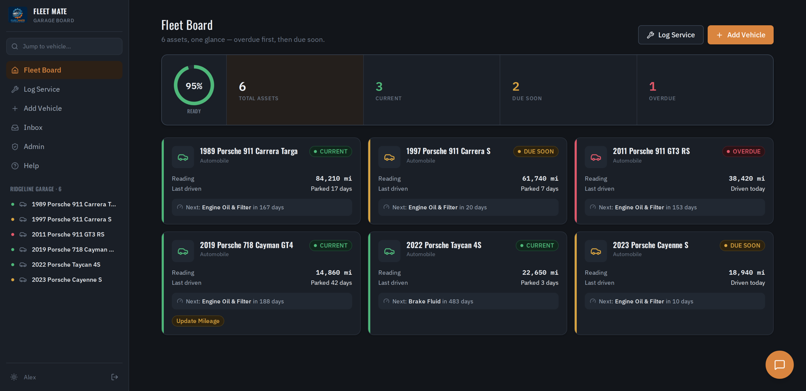
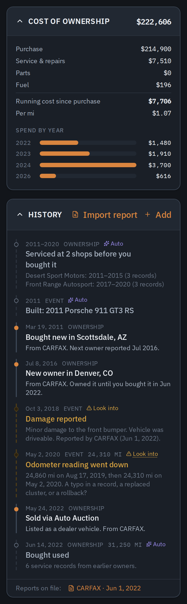
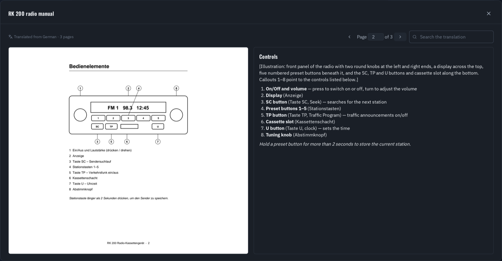
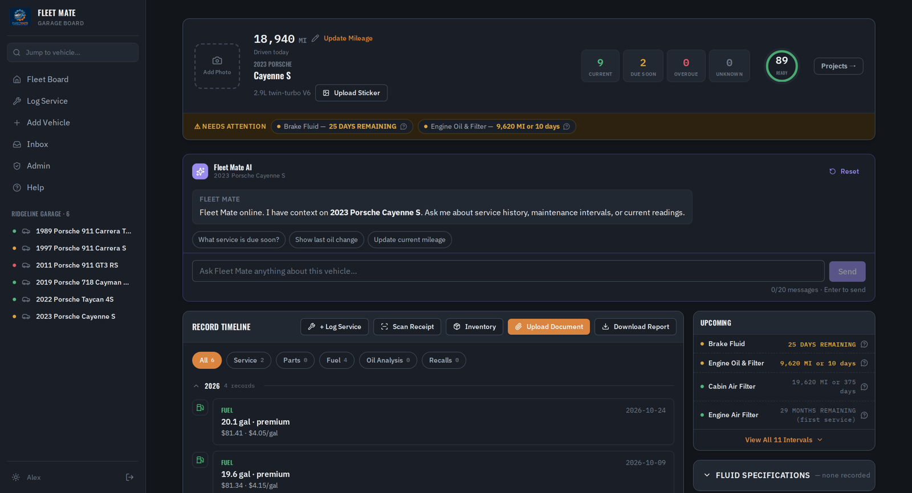

Vehicle maintenance and fleet tracking, kept simple.
Keep every car, truck, motorcycle, and piece of equipment you own on schedule. Scan a receipt, an odometer, or a tire sidewall with your camera, and Fleet Mate turns it into a clean service history — then tells you what's due next.

Point your camera at a service receipt and Fleet Mate reads the line items, parts, and odometer for you to confirm. Scan the fuel pump or receipt to log a fill-up, read the odometer straight off the dash, and capture DOT codes from each tire's sidewall to track tire age. Owner's manual maintenance pages can be scanned in too, so intervals match what the manufacturer actually recommends.
Routine work and inspections are tracked separately, each with its own interval. A quick-reference Specs & Intervals screen puts oil type, capacities, and service intervals one tap away, and local notifications let you know when an item becomes due or overdue.
Fuel History charts your fill-ups and compares MPG by fuel grade, so you can see whether premium is really paying off. Cost of ownership rolls up fuel, parts, and service into a total and a per-mile figure for each vehicle.
Attach photos to service records as proof the work was done. Track when each vehicle was last driven — "Parked 42 days" — and record its story: past owners, restorations, and shows. It's the history a future buyer will want to see.
Fleet Mate fills in what it can work out on its own — how and when you bought it, when it was built, the shops earlier owners used — and flags what's worth a closer look, like years with no records or an odometer reading that went backwards. Import a CARFAX or AutoCheck report and its owners, service visits, and inspections join the timeline, matched against the records you already have. (On the web.)
Cost of ownership and history for a 2011 911 GT3 RS, with an imported CARFAX report, on the web.

Scan a part's barcode to see when you bought it, how many are left, and log it against a vehicle when you use one. Fleet Mate remembers which vehicles each part number fits, so a box of filters bought for one car shows up as usable stock on another. One parts order can be split across several vehicles, and Fleet Mate can check whether a part fits before you confirm it. (Fitment on the web.)
Keep manuals, wiring diagrams, build sheets, and useful links with each vehicle. A manual in German, Japanese, or Italian can be read into English page by page, shown beside the original so every button and diagram still lines up. Search it, and ask Fleet Mate how to set the clock on the radio — it answers from the manual and tells you which page. (Translation on the web.)
Every account gets its own Fleet Mate inbox address. Forward a shop invoice or a parts order confirmation and it lands in your inbox, already read and matched to the right vehicle, ready for you to review.
Plan bigger jobs — a suspension rebuild, a 100k-mile service, getting a car ready for winter — as a project with its own task list, reference photos, and an assistant that suggests what else to check based on the vehicle's history. (On the web.)
An optional chat assistant knows your vehicles, their service history, what's coming due, and the manuals and history you've saved. Ask "when did I last change the oil on the truck?", "what's overdue across the fleet?", or "how many owners did the 911 have?" and get an answer grounded in your own records.


Whether it's a daily driver, a weekend classic, a tractor, or a small business fleet, everything lives in one place. Retire a vehicle when you sell it and its history stays on record. A web companion adds a full-size view of your fleet, recall checks, and a printable vehicle report with your maintenance history and photos.
Your records are yours. Download a vehicle's full report as a ZIP — a PDF summary plus every receipt, manual, photo, and history report you've stored — any time, to hand to a buyer or keep for yourself.
No ads, no tracking SDKs, no data sales. Fleet Mate runs on infrastructure we operate ourselves, and you can have your data deleted at any time.
Read the policy →